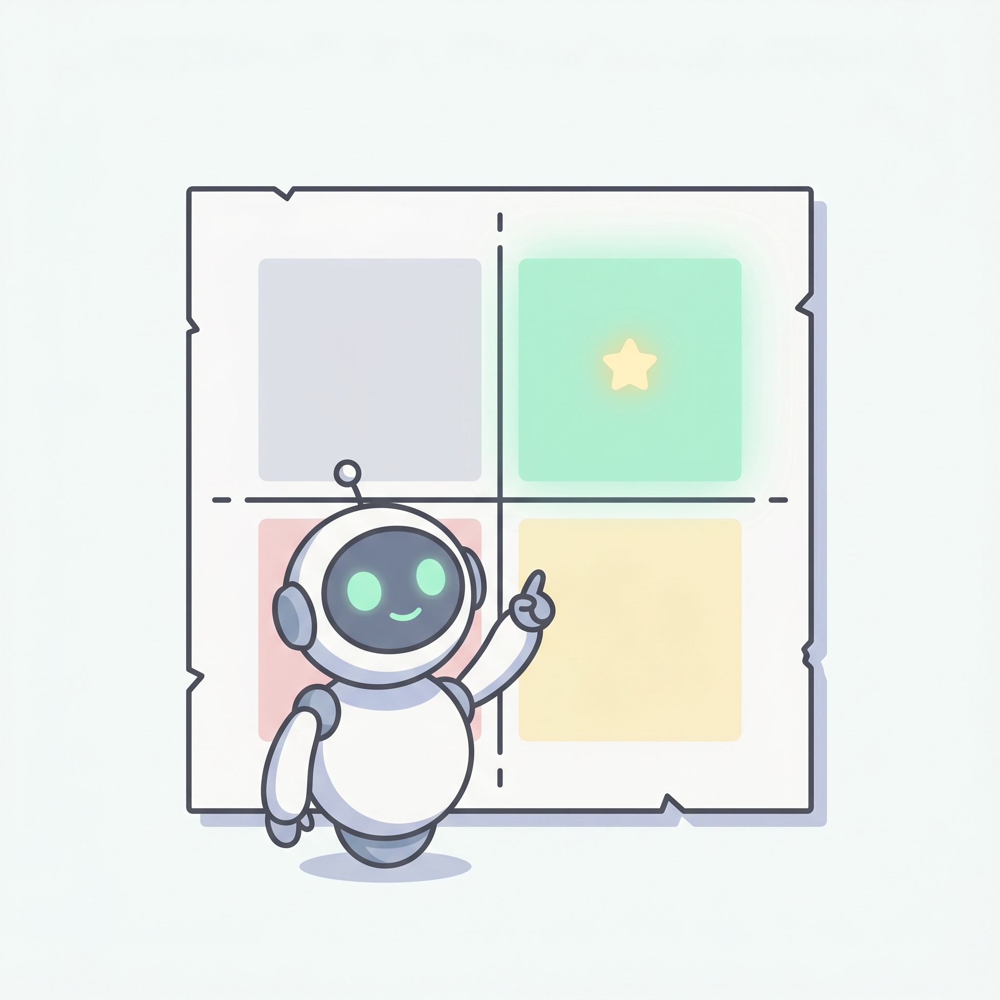
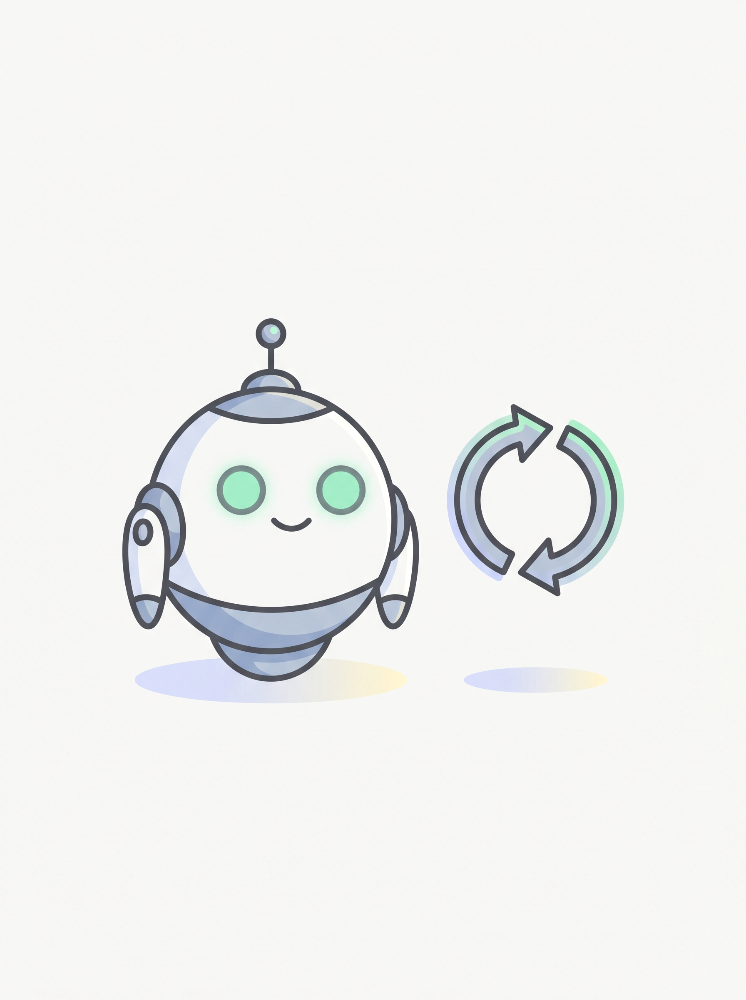
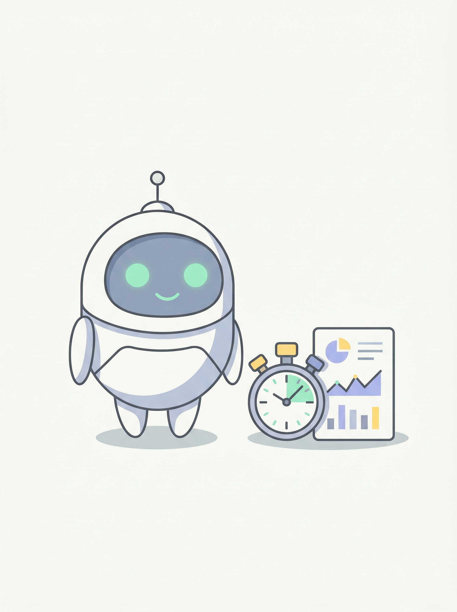
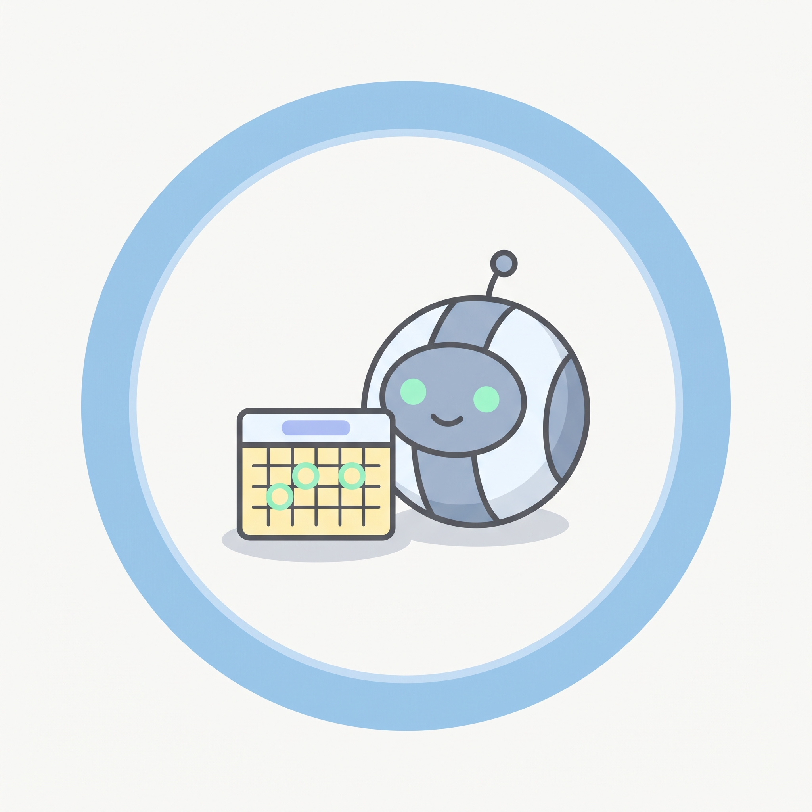
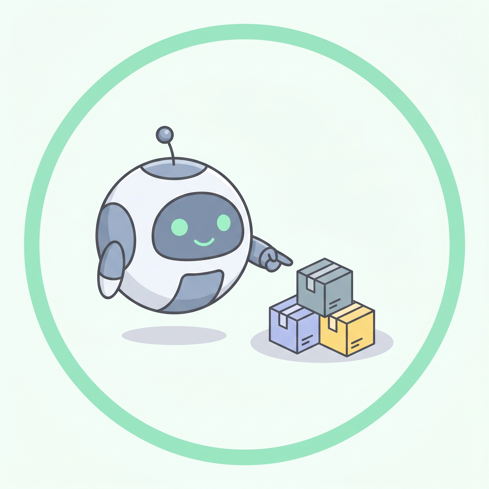
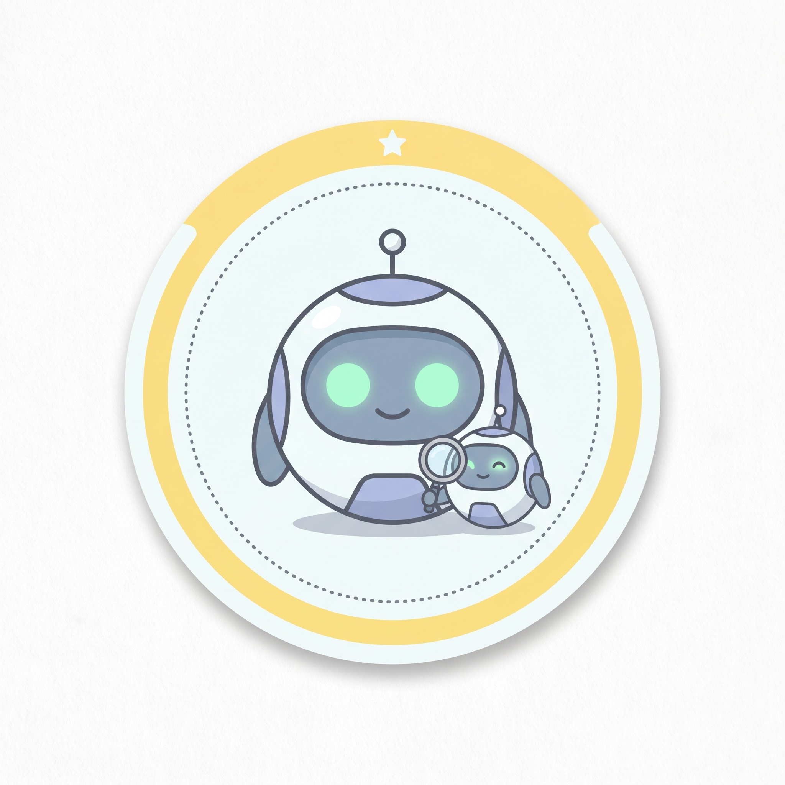

Most projects fail because the first agent was the wrong agent. We'll use a small matrix, four properties, and five questions to narrow your shortlist to one.
Plot your candidates. Build the one with the highest value and the lowest effort.

The most common mistake here is the high-value, high-effort agent. The "obviously useful" one that's a four-month build. Save those for agent #3.
All four should be true. If three are true and one is missing, you've found which gap to fix first.

It happens at least daily, and the answer is roughly similar each time.
The inputs already live somewhere accessible. Don't fix data and build agents in one project.
A wrong output causes embarrassment, not financial or legal harm.

You can count the hours per week it saves, in numbers, by end of month one.
Run your shortlist through these, in order. Stop at the first "no" and pick a different candidate.

If no → reconsider. The win compounds with frequency. Once-a-month tasks rarely justify the build.

If no → the data isn't ready. Fix the plumbing first as its own project, then come back.
If no → skip for the first agent. Build something where embarrassment is the worst case.
If no → you're not ready. If you can't describe the output, you don't know the task well enough to delegate it.
If no → measure first, build later. Most agent failures are actually measurement failures.
Take the two candidates you picked at Station 04. Walk each one through all five questions. Where did the first "no" come for each? The one with the fewest gaps wins.

Fifth sticker. Four more to collect.